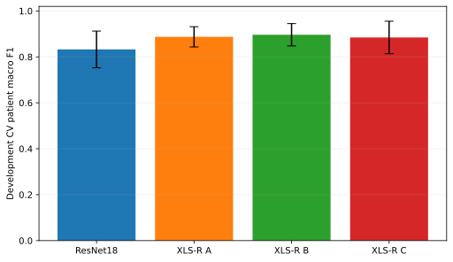
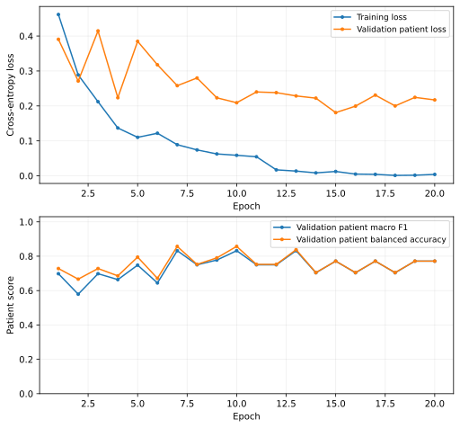
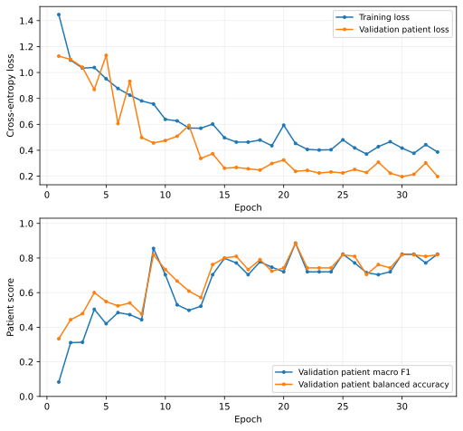
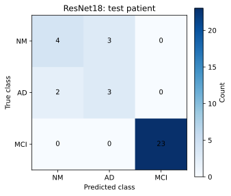
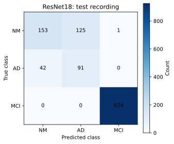
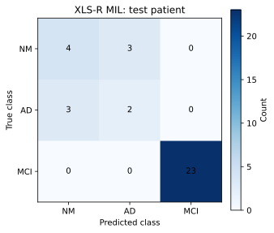

Matched patient splits, shared development folds, and saved aggregate results.
Selected XLS-R variant: B · ResNet18 selected epoch: 10 · XLS-R MIL selected epoch: 21
Cohort and shared patient partitions
The cohort combines retained prior NM/AD recordings with the new MCI archive. Prior MCI recordings are excluded. Eligibility uses canonical 06/07 tasks. Distinct repeated takes from the same patient remain eligible; exact duplicate content and unresolved cross-patient identity conflicts must be handled before the manifest is frozen.
Included patients: 234 · Included recordings: 9,080.
Diagnosis
Patients
Recordings
NM
48
1,839
AD
32
1,065
MCI
154
6,176
Cohort audit
Count
Prior MCI patients excluded
18
Prior MCI recordings excluded
711
Repeated task slots with distinct retained takes
30
Recordings retained in those repeated slots
61
Additional distinct takes retained
31
Participants with multiple takes
21
Source and task coverage
Source cohort
Split
Task
Patients
Recordings
Retained prior NM/AD
train
06
56
1,540
Retained prior NM/AD
train
07
55
512
Retained prior NM/AD
val
06
12
335
Retained prior NM/AD
val
07
12
105
Retained prior NM/AD
test
06
12
311
Retained prior NM/AD
test
07
12
101
New MCI archive
train
06
108
3,246
New MCI archive
train
07
107
1,081
New MCI archive
val
06
23
693
New MCI archive
val
07
23
232
New MCI archive
test
06
23
690
New MCI archive
test
07
23
234
Shared frozen splits
Both methods use the same approved patient memberships. All recordings from a person stay together. Prior NM/AD split roles are preserved; new MCI patients are assigned deterministically.
Split
Patients
Recordings
NM patients
AD patients
MCI patients
train
164
6,379
34
22
108
val
35
1,365
7
5
23
test
35
1,336
7
5
23
Method and evaluation protocol
ResNet18 rerun of the s00 method
A randomly initialized single-channel ResNet18 classifies fixed-size 40-band log-mel inputs from mono 16 kHz audio. Training uses random five-second crops and equal expected class mass with equal patient mass within each class. Short clips are padded. Validation/test use up to five deterministic windows per recording; window probabilities are averaged into recording probabilities, then recordings are averaged equally within each patient.
Frozen XLS-R rerun of the s01 method
A pinned frozen multilingual XLS-R encoder processes up to five deterministic five-second waveform windows. Padding masks exclude padded samples and encoder frames. Valid frames are averaged within windows, then windows are averaged equally into recording representations. A trainable LayerNorm → Linear(256) → GELU → Dropout(0.3) projection and diagnosis head use all available recordings in each patient bag. A uses mean MIL; B uses learned attention MIL; C uses the same attention MIL with train-only channel variants. Validation/test always use base representations. Patient cross-entropy uses inverse training-patient class-frequency weights.
Shared selection and once-only final evaluation
Five-fold diagnosis-stratified CV combines the study training and validation patients; all recordings from each patient remain together. ResNet18 and XLS-R A/B/C use identical folds. Fold checkpoints use patient macro F1, with lower unweighted patient loss as the tie-breaker. Mean CV patient macro F1 selects the XLS-R variant; ties use lower mean patient loss, then A → B → C. After configuration is frozen, both final models train on the study training patients and select checkpoints on the study validation patients. Each selected method evaluates the study test patients once. Recording results are supplementary.
Technical source audit
Headers inspected: 9,080 · Header errors: 0. Header inspection includes all splits and performs no model evaluation.
These are available technical metadata. They do not establish device/site identities or verify clinical diagnoses.
Shared five-fold development CV
Selected XLS-R variant: B. ResNet18 and all XLS-R variants use the same patient folds. Selection uses mean patient macro F1; ties use lower mean patient loss, then A → B → C. Test patients are excluded.

Development CV means; error bars are sample fold SD, not confidence intervals · SVG · PNG
Method
Saved folds
Macro F1 mean ± SD
Balanced accuracy mean ± SD
Macro AUC mean ± SD
Loss mean ± SD
ResNet18
5
0.8326 ± 0.0799
0.8337 ± 0.0826
0.9721 ± 0.0211
0.2026 ± 0.0767
XLS-R A
5
0.8873 ± 0.0441
0.8787 ± 0.0486
0.9773 ± 0.0135
0.2326 ± 0.0713
XLS-R B
5
0.8963 ± 0.0486
0.8994 ± 0.0534
0.9813 ± 0.0084
0.2499 ± 0.0473
XLS-R C
5
0.8845 ± 0.0708
0.8930 ± 0.0661
0.9791 ± 0.0165
0.3285 ± 0.1353
Saved fold checkpoints
Method
Fold
Best epoch
Patients
Macro F1
Balanced accuracy
Macro AUC
Loss
ResNet18
1
25
40
0.7271
0.7259
0.9380
0.2895
ResNet18
2
4
40
0.9521
0.9583
0.9941
0.1044
ResNet18
3
1
40
0.8235
0.8344
0.9690
0.2551
ResNet18
4
26
40
0.8301
0.8250
0.9808
0.1453
ResNet18
5
7
39
0.8301
0.8250
0.9787
0.2186
XLS-R A
1
15
40
0.8577
0.8296
0.9633
0.3220
XLS-R A
2
19
40
0.9028
0.9028
0.9807
0.2792
XLS-R A
3
31
40
0.9028
0.9028
0.9853
0.2061
XLS-R A
4
70
40
0.9434
0.9333
0.9936
0.1363
XLS-R A
5
31
39
0.8301
0.8250
0.9636
0.2195
XLS-R B
1
37
40
0.8833
0.8667
0.9766
0.2040
XLS-R B
2
15
40
0.9028
0.9028
0.9821
0.2699
XLS-R B
3
20
40
0.8791
0.8900
0.9853
0.3143
XLS-R B
4
25
40
0.9741
0.9877
0.9922
0.2586
XLS-R B
5
41
39
0.8424
0.8500
0.9703
0.2026
XLS-R C
1
24
40
0.8332
0.8761
0.9778
0.3427
XLS-R C
2
8
40
0.8564
0.8611
0.9560
0.5548
XLS-R C
3
43
40
0.9028
0.9028
0.9883
0.2075
XLS-R C
4
21
40
1.0000
1.0000
1.0000
0.2692
XLS-R C
5
17
39
0.8301
0.8250
0.9736
0.2684
Only saved fold results are shown. Missing means remain unavailable; partial folds are never presented as a completed comparison. CV chooses checkpoints and the XLS-R architecture; it is development model selection, not an unbiased nested-CV estimate.
Final-fit learning curves
Each curve describes one method’s final fit. CV fold histories are kept separate.
ResNet18

ResNet18: final training and patient-validation history · SVG · PNG
Epoch
Train loss
Patient validation loss
Patient macro F1
Patient balanced accuracy
1
0.4616
0.3907
0.6982
0.7284
2
0.2887
0.2711
0.5789
0.6667
3
0.2120
0.4147
0.6982
0.7284
4
0.1368
0.2234
0.6639
0.6857
5
0.1101
0.3848
0.7481
0.7950
6
0.1218
0.3177
0.6446
0.6712
7
0.0889
0.2580
0.8322
0.8571
8
0.0740
0.2799
0.7500
0.7524
9
0.0625
0.2232
0.7778
0.7905
10
0.0587
0.2091
0.8322
0.8571
11
0.0544
0.2400
0.7500
0.7524
12
0.0170
0.2380
0.7500
0.7524
13
0.0135
0.2286
0.8322
0.8381
14
0.0083
0.2222
0.7037
0.7048
15
0.0123
0.1808
0.7714
0.7714
16
0.0048
0.1994
0.7037
0.7048
17
0.0041
0.2309
0.7714
0.7714
18
0.0011
0.2000
0.7037
0.7048
19
0.0016
0.2245
0.7714
0.7714
20
0.0039
0.2172
0.7714
0.7714
XLS-R MIL

XLS-R MIL: final training and patient-validation history · SVG · PNG
Epoch
Train loss
Patient validation loss
Patient macro F1
Patient balanced accuracy
1
1.4467
1.1263
0.0833
0.3333
2
1.0952
1.1011
0.3108
0.4435
3
1.0338
1.0406
0.3131
0.4783
4
1.0385
0.8689
0.5034
0.6000
5
0.9517
1.1322
0.4204
0.5482
6
0.8768
0.6058
0.4844
0.5238
7
0.8250
0.9315
0.4726
0.5400
8
0.7807
0.4986
0.4435
0.4762
9
0.7571
0.4564
0.8552
0.8190
10
0.6388
0.4750
0.7037
0.7333
11
0.6266
0.5082
0.5294
0.6667
12
0.5717
0.5919
0.4977
0.6087
13
0.5699
0.3371
0.5213
0.5714
14
0.6023
0.3734
0.7037
0.7619
15
0.4966
0.2617
0.7983
0.8000
16
0.4631
0.2675
0.7714
0.8095
17
0.4628
0.2571
0.7037
0.7333
18
0.4790
0.2474
0.7778
0.7905
19
0.4352
0.2976
0.7468
0.7238
20
0.5935
0.3249
0.7203
0.7429
21
0.4526
0.2371
0.8857
0.8857
22
0.4064
0.2447
0.7203
0.7429
23
0.4020
0.2247
0.7203
0.7429
24
0.4041
0.2329
0.7203
0.7429
25
0.4803
0.2254
0.8222
0.8190
26
0.4182
0.2522
0.7714
0.8095
27
0.3705
0.2283
0.7151
0.7048
28
0.4280
0.3081
0.7037
0.7619
29
0.4660
0.2235
0.7203
0.7429
30
0.4169
0.1965
0.8222
0.8190
31
0.3767
0.2145
0.8222
0.8190
32
0.4431
0.3022
0.7714
0.8095
33
0.3862
0.1977
0.8222
0.8190
Matched s02 patient results
These are the current s02 reruns of the ResNet18 method from s00 and XLS-R MIL method from s01. Historical scores from the smaller cohort are not inserted as matched baselines. Each final checkpoint is selected on validation patients before one planned test evaluation per method.
Method
Split
Patients
Macro F1
Balanced accuracy
Accuracy
Macro OvR AUC
ResNet18
validation
35
0.8322
0.8571
0.9143
0.9725
XLS-R MIL
validation
35
0.8857
0.8857
0.9429
0.9765
ResNet18
test
35
0.7203
0.7238
0.8571
0.9686
XLS-R MIL
test
35
0.6571
0.6571
0.8286
0.9166
Missing method results remain pending. Patient identity matching is enforced by the study runner; equal aggregate counts alone cannot establish matching.
ResNet18 · selected checkpoint validation
Patient level · n = 35
Primary patient assessment: ResNet18 averages recording probabilities equally within each patient.
Supplementary recording assessment: each recording inherits the patient diagnosis. Correlated clips are not independent patients and never select the architecture or checkpoint.
AUC uses class probabilities. A class without positive and negative examples has no defined AUC; full three-class macro AUC is unavailable if any class AUC is undefined.
XLS-R MIL · selected checkpoint validation
Patient level · n = 35
Primary patient assessment: one MIL bag prediction uses all available recordings from the patient.
Supplementary recording assessment: each recording inherits the patient diagnosis. XLS-R recording predictions use singleton bags. Correlated clips are not independent patients and never select the architecture or checkpoint.
AUC uses class probabilities. A class without positive and negative examples has no defined AUC; full three-class macro AUC is unavailable if any class AUC is undefined.
ResNet18 · final test
Patient level · n = 35
Primary patient assessment: ResNet18 averages recording probabilities equally within each patient.
Macro F172.0%
Balanced accuracy72.4%
Accuracy85.7%
Macro OvR ROC AUC96.9%
Loss0.2271
Per-class performance
Class
Precision
Recall
F1
OvR ROC AUC
Support
NM
66.7%
57.1%
61.5%
95.9%
7
AD
50.0%
60.0%
54.5%
94.7%
5
MCI
100.0%
100.0%
100.0%
100.0%
23
Confusion matrix
True / predicted
NM
AD
MCI
NM
4
3
0
AD
2
3
0
MCI
0
0
23

ResNet18: test patient confusion counts · SVG · PNG
Recording level · n = 1,336
Supplementary recording assessment: each recording inherits the patient diagnosis. Correlated clips are not independent patients and never select the architecture or checkpoint.
Macro F172.2%
Balanced accuracy74.4%
Accuracy87.4%
Macro OvR ROC AUC96.1%
Loss0.3785
Per-class performance
Class
Precision
Recall
F1
OvR ROC AUC
Support
NM
78.5%
54.8%
64.6%
95.8%
279
AD
42.1%
68.4%
52.1%
92.5%
133
MCI
99.9%
100.0%
99.9%
100.0%
924
Confusion matrix
True / predicted
NM
AD
MCI
NM
153
125
1
AD
42
91
0
MCI
0
0
924

ResNet18: test recording confusion counts · SVG · PNG
AUC uses class probabilities. A class without positive and negative examples has no defined AUC; full three-class macro AUC is unavailable if any class AUC is undefined.
XLS-R MIL · final test
Patient level · n = 35
Primary patient assessment: one MIL bag prediction uses all available recordings from the patient.
Macro F165.7%
Balanced accuracy65.7%
Accuracy82.9%
Macro OvR ROC AUC91.7%
Loss0.3046
Per-class performance
Class
Precision
Recall
F1
OvR ROC AUC
Support
NM
57.1%
57.1%
57.1%
90.3%
7
AD
40.0%
40.0%
40.0%
84.7%
5
MCI
100.0%
100.0%
100.0%
100.0%
23
Confusion matrix
True / predicted
NM
AD
MCI
NM
4
3
0
AD
3
2
0
MCI
0
0
23

XLS-R MIL: test patient confusion counts · SVG · PNG
Recording level · n = 1,336
Supplementary recording assessment: each recording inherits the patient diagnosis. XLS-R recording predictions use singleton bags. Correlated clips are not independent patients and never select the architecture or checkpoint.
Macro F156.4%
Balanced accuracy56.0%
Accuracy79.6%
Macro OvR ROC AUC87.8%
Loss0.5096
Per-class performance
Class
Precision
Recall
F1
OvR ROC AUC
Support
NM
58.5%
60.2%
59.4%
88.0%
279
AD
32.7%
12.8%
18.4%
82.3%
133
MCI
88.1%
95.0%
91.4%
93.2%
924
Confusion matrix
True / predicted
NM
AD
MCI
NM
168
35
76
AD
73
17
43
MCI
46
0
878
XLS-R MIL: test recording confusion counts · SVG · PNG
AUC uses class probabilities. A class without positive and negative examples has no defined AUC; full three-class macro AUC is unavailable if any class AUC is undefined.
Interpretation and practical limitations
The new MCI cohort and prior NM/AD cohort differ in source acquisition. Source and diagnosis are confounded; successful class separation can exploit cohort or channel cues. Resampling and channel transformations do not establish domain invariance. Cross-device or cross-site evidence requires independent devices/sites with diagnosis overlap. Diagnosis must never be treated as a measured device identity.
Prior NM/AD test outcomes were already known from s00/s01, and those patient split roles are retained. This is an expanded-cohort comparison with a partly reused known holdout, not a pristine blinded confirmatory test. Validation and development CV are used for selection and are not independent generalization estimates. Small NM/AD test supports and correlated clips limit precision; inspect AD recall and the full per-class confusion matrices. Strong MCI performance does not by itself demonstrate clinical generalization.
Report patient macro F1, balanced accuracy, AUC and supports together. Class imbalance can make accuracy misleading. Compare only the new matched s02 runs; historical scores from a different cohort do not provide a paired estimate of improvement.